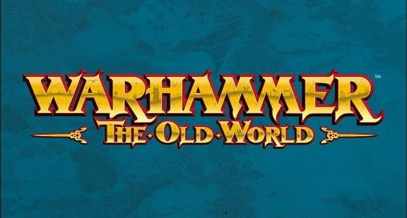
D'abord, essayer de se mettre d'accord,
« La Règle La Plus Importante », p. 93 :
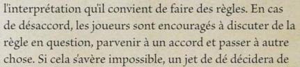
Sinon, de base nous appliquerons la réponse automatique de oldworldFAQ@gwplc.com :
Lorsque les Jets de Dés Rapides sont autorisés [p. 138 & 148], vous pouvez a contrario tenter les Sauvegardes de régénération une par une, car les Jets pour Blesser (et la perte d'un PV consécutif) se font aussi possiblement « un à la fois » [FAQ]. Ainsi, vous pouvez tenter plus de Sauvegardes de Régénération que le nombre de PV restants au début de ce tir/palier d'I.
Lorsque les Jets de Dés Rapides ne sont pas autorisés (comme dans le cadre de Blessures Multiples, car c'est un seul Jet de Blessure qui provoque la perte de plusieurs PV [p. 175]), alors il est impossible de faire plus de Sauvegardes de Régénération que le nombre de PV restants à la figurine touchée, au début de ce jet pour blesser.
N'oubliez pas que pour les unités de figurines à PV multiples, les blessures sont résolues une par une, figurine par figurine [FAQ], mais le retrait des pertes se fait bien dès que l'UNITÉ a assez perdu de PV pour cela, « Vous devez retirer autant de figurines que possible », « vous ne pouvez pas répartir les pertes de PV entre les figurines pour éviter les pertes » [p. 102].
Enfin, en ce qui concerne le Carnage, bien noter que dans ce cadre ce sont les blessures non sauvegardées qui sont prises en compte pour le bonus de résultat de combat [p. 152], donc avant éventuelles Blessures Multiples et/ou Régénération ; et non pas les PV perdus ! Quant à la nécessité d'avoir tué son adversaire pour bénéficier du Carnage, la p. 97 précise « Si, à n'importe quel moment, la caractéristique PV d'une figurine est réduite à 0, elle est tuée », donc même si l'adversaire réduit à 0 PV regénère ensuite, et n'est plus « tué », les règles de Carnage s'appliquent néanmoins.
Nous appliquerons bien la touche sur les Monstres entre le point visé et le point d'impact, comme écrit. [FAQ]
(pour la Formation Éparse notamment)
Les UNITÉS n'effectuent pas de Manœuvres, à la place chaque FIGURINE se déplace librement [p. 184]. Du coup chaque figurine peut PIVOTER à tout moment lors de son mouvement, et même plus largement « changer sa position » [FAQ sur « se déplacer »] à la guise du joueur, dans la limite du nombre de pouces parcourable, et du respect de la cohérence de l'unité.
Lorsqu'il n'existe pas une majorité de figurines avec un M différent des autres, la règle « peut utiliser la caractéristique de Mouvement de la majorité des figurines de l'unité » [AJ p. 40] n'est pas applicable, car elle nécessite justement une majorité. On applique alors la règle de base du jeu : « S'il y a plus d'une caractéristique de Mouvement au sein d'une unité, l'unité entière se déplace à l'allure de sa figurine la plus lente. » [p. 123]
Ajouter à la fin de la règle spéciale « Revérifier alors les Lignes de Vues, et les Portées » [p. 168], pour coller à l'utilisation habituelle de la règle, et son esprit supposé.
Remplacer « The spell is then resolved with the bearer of the Amulet as its target. » par « The casting continues with the bearer of the Amulet as its target. » [AJ p. 47], pour que l'utilisation de l'objet n'exempte pas du jet de Lancement et du jet de Dissipation du sort.
Nous appliquerons la réponse « ne peut pas être atteint par un boulet de canon, même si son socle se trouve directement sur la trajectoire de rebond du boulet de canon. Cependant, si le socle d'un personnage Isolé se trouve directement sous le point d'impact d'un boulet de canon, il est touché. » [FAQ] à toutes les règles interdisant de viser un personnage (Limiers Spectraux d'Orion, Mantle of Drifting Shadow…).
Un Nécrophage est en défi. Son adversaire lui inflige 1 blessure non sauvegardée. Le Nécrophage tombe à 0 PV, réussit sa première Sauvegarde de Régénération et se retrouve à 1 PV. Puis il subit une autre blessure non sauvegardée de la part de son adversaire, retombe à 0 PV, échoue sa seconde Sauvegarde de Régénération. Même s'il a perdu uniquement 1 PV au final dans ce défi, le bonus de résultat de combat amené par le Carnage sera de 2, car il y a eu 2 blessures non sauvegardées lors du défi.
Un personnage se tient juste derrière un Monstre par rapport à un canon ennemi. Ce dernier vise n'importe quel point visible dans la direction du personnage, à maximum 10 pouces devant le Monstre. Jamais le personnage ne sera touché par le tir de canon, mais le Monstre sera touché automatiquement, sauf Incident de Tir du canon.
Une unité de Chevaliers Pégases faisant une marche forcée en Terrain Découvert, bougera librement chacune de ses figurines de 20” maximum, pivots de chacune compris.
Une unité composée d'1 Gardien des Bêtes et d'1 Chien du Grand-bois, comme il n'y a pas de majorité de figurines, ne bougera que de M 5.
Un Canon tire à la mitraille sur des Coureurs d'Égout à 10”. Ce premier vérifie ligne de vue et portée, et les déclare comme cible car en vue et à portée. Les Coureurs utilisent Esquiveurs pour se Replier en Bon Ordre de 5”. Le Canon revérifie alors de nouveau portée et ligne de vue, mais ne peut plus tirer sur la cible déclarée, car elle est hors de portée.
La même unité de Coureurs est plus tard déclarée comme cible par une catapulte. Celle-ci « choisit sa cible » [p. 224], et pose le gabarit centré sur l'unité à ce moment-là, c'est alors que les Coureurs se Replient en Bon Ordre de 6”, laissant le gabarit posé sur aucune figurine, car il n'est pas repositionné, on revérifie juste Portée et Ligne de vue.
Une Boule de Feu désigne comme cible le porteur. Celui-ci peut tenter un test de Cd pour qu'une nouvelle cible du sort soit définie, qui possède, elle, la règle Résistance à la Magie (-1). Le jet de Lancement est ensuite effectué avec un malus de 1, puis l'éventuel jet de Dissipation, puis enfin les effets du sort sont résolus.
Le porteur d'un Mantle of Drifting Shadow se trouve à plus de 6 pouces d'un canon. Ce dernier désigne un point dans la direction du porteur, à 4 pouces exactement de celui-ci, sans aucun élément bloquant avant. Le porteur pourra être touché uniquement si le premier dé d'artillerie donne un 4.
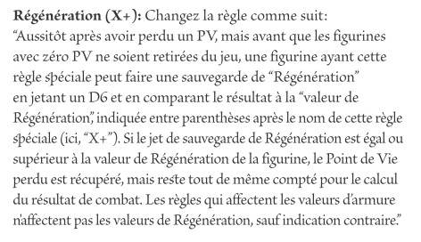
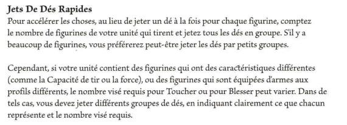
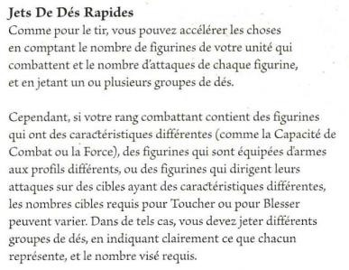
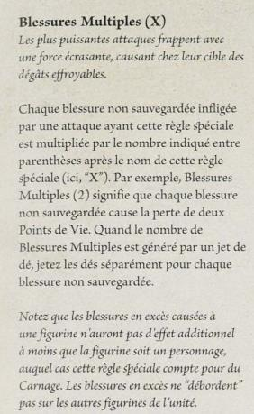
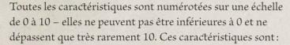
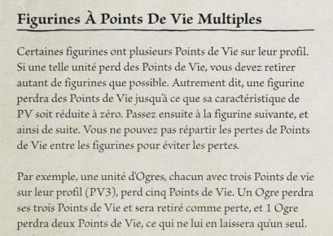
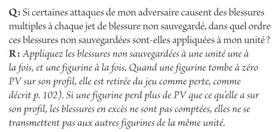
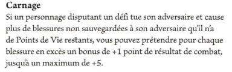
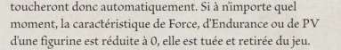
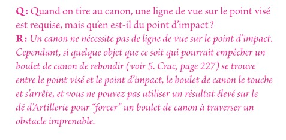
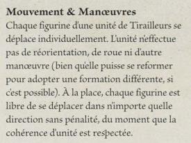
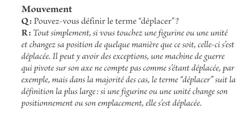
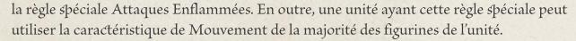
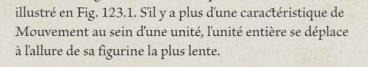
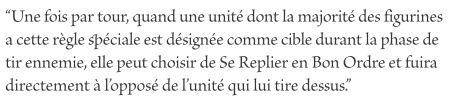
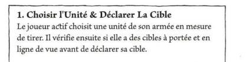
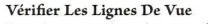
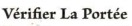
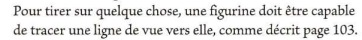
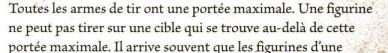
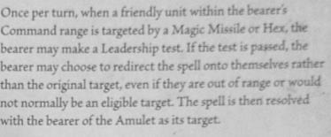
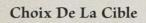
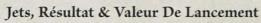
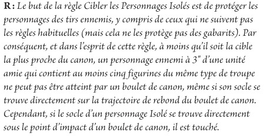